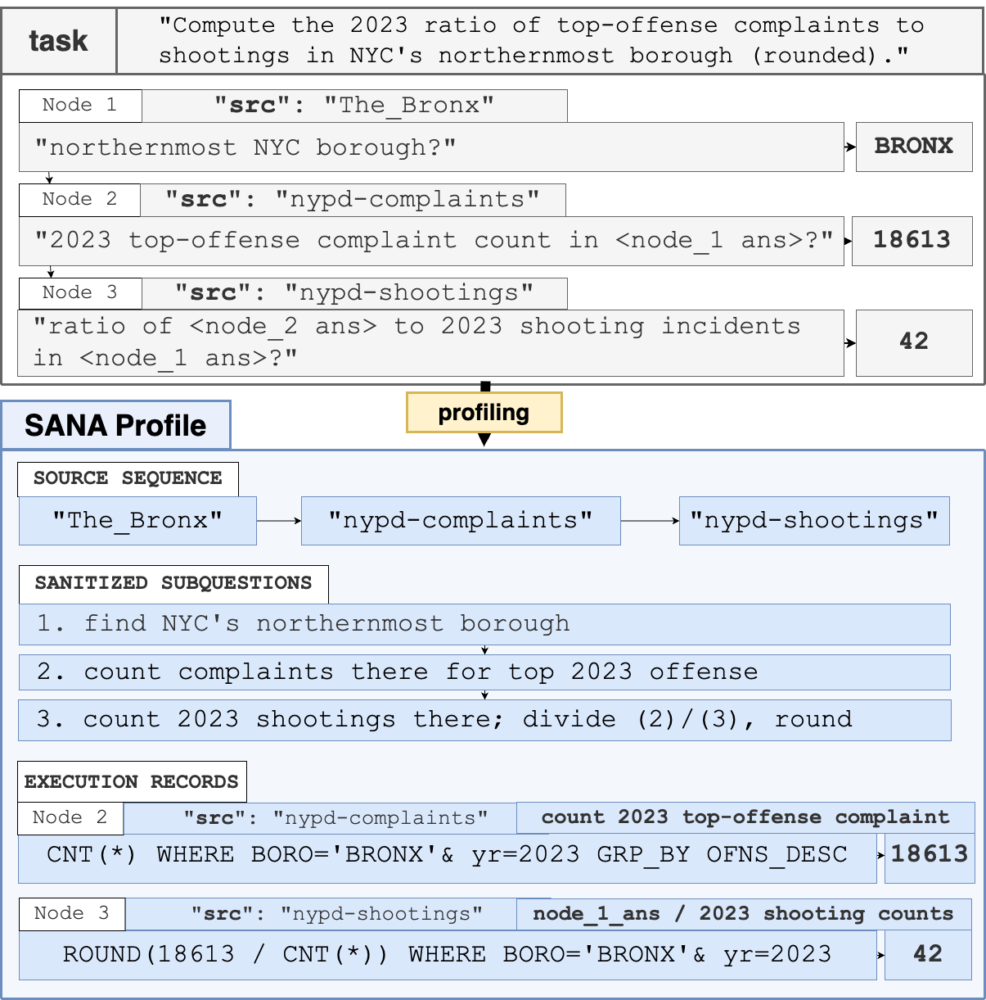

From a benchmark to a diagnosis, in three independent stages — profile, evaluate, analyze.
An exploratory-QA task is a tuple τ = (Q, D, Dgold, T, A★, B): a question
Q, a data lake D, the minimal gold sources Dgold
sufficient to answer it, a tool set T (dataset search f(q,k)
and data analysis g(c,d)), the gold answer A★, and a
tool-call budget B (we use B = 30). SANA runs as three phases you can use independently:
Profiling mirrors a benchmark task into a LakeQA-style EQA task and a matching runtime profile — the artifact that powers every idealized tool. A profile records:
source_sequence / dataset_sequence — the ordered gold sources each step needs.reasoning_chain_text — the answer-safe decomposition (sub-questions that don't leak which dataset to fetch).ideal_query / ideal_code — per node: the intent, the verified SQL or Python, and the gold intermediate answer.
The profile is what each ideal mode draws on at evaluation time:
--profile idealExposes the gold reasoning chain as an explicit, answer-safe decomposition.
--search idealReturns exactly the gold sources each query needs from the source sequence — nothing irrelevant.
--compute idealRuns the profile's ideal SQL/Python — no implementation error, exactly as the agent intended.
LakeQA and KramaBench ship ready-made tasks, profiles, and artifacts. Converting a new benchmark is report-first: sample examples, scaffold a transform skill, then run it.
Evaluation runs a fixed agent runtime against the profiles while you choose which axis to
ablate. A diagnostic run flips one axis off ideal and holds the rest idealized,
so there are no conflicting bottlenecks. Each axis is a CLI flag:
| Flag | Modes | What it controls |
|---|---|---|
--profile | naive · standard · ideal | How much runtime-profile guidance (the decomposition) the agent is given. |
--search | naive · standard · ideal · preloaded | BM25 (naive), hybrid RRF + LLM descriptions (standard), gold sources (ideal), or Dgold placed in context (preloaded). |
--results | naive · ideal | Live retrieved results vs. profile-backed ideal result payloads. |
--compute | standard · ideal | Ordinary execution tools vs. the profile's ideal SQL/Python. |
--skills | on · off | The AgentSkills plugin. |
Each axis is chosen per run, alongside the benchmark, model, search-result limit, and task scope — a lightweight smoke sample or the full maintained task set.
Every phase is replaceable: swap in your own data lake, retrieval backend, or benchmark artifacts and keep SANA's artifact contracts. Measuring a new retriever or executor is just a run with that axis set to its mode, compared against the idealized upper bound and the realistic baselines.
Analysis scores the runs and reproduces the paper's diagnosis. The primary metric is semantic match (SM) — an LLM-as-judge crediting answers equivalent to the gold answer up to formatting, aliases, units, or phrasing — alongside two discovery-recall metrics over the gold sources:
Semantic match against the gold answer (↑), the headline metric.
Retrieval recall: gold sources surfaced by the search tools (↑).
Access recall: gold sources actually opened / queried (↑).
From the scored runs, analysis produces:
If idealizing an axis closes a large gap, that component is the bottleneck. The gap that remains when all three are idealized is attributable to the agent's policy — evidence tracking, source commitment, intermediate validation, and stopping criteria.
@inproceedings{sana2026,
title = {SANA: What Matters for QA Agents over Massive Data Lakes?},
author = {Wijaya, Austin Senna and Liu, Jiaxiang and Wang, Haonan and Wu, Eugene},
booktitle = {VLDB 2026 Workshop on Systems for Data-centric Agents with Human-in-the-loop (DASHSys)},
year = {2026}
}
See the eval repo for the maintained CLI, the full flag set, and runnable artifacts.